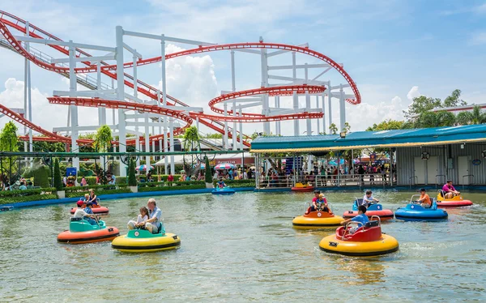
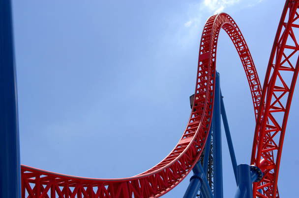

Welcome to the one and only Seaside park!
Hello there! thank you for stopping by our page!
This site is here to introduce you to Seaside Park and tell you anything you need to know before before visiting.
Seaside park is an amusement that plays around with the themes of the ocean that it was built in front of.
We have a variety of rides here at Seaside Park, ranging from a calming ferris wheel to the fast paced roller coasters that thrill seekers love!
We also frequently host special events around the park, so there's always something for everybody!
Have a look at some of our rides!

High Tide, which gives you a great view of the park!

Seashell surfers, one of our first rides!

Seahorse Sprint, which is by far our most popular ride among thrill seekers!